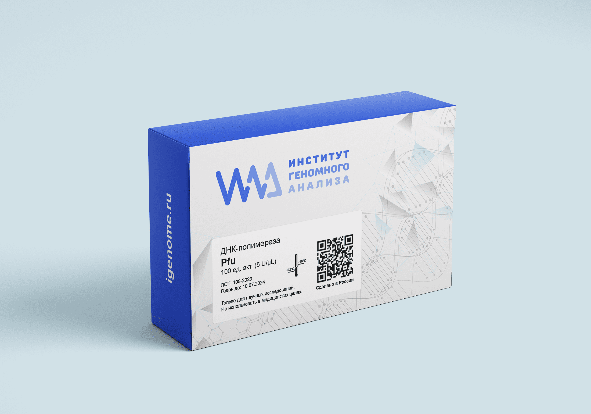
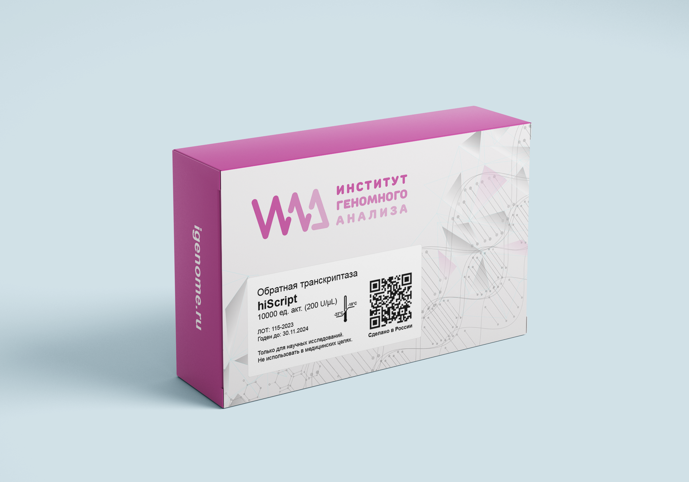
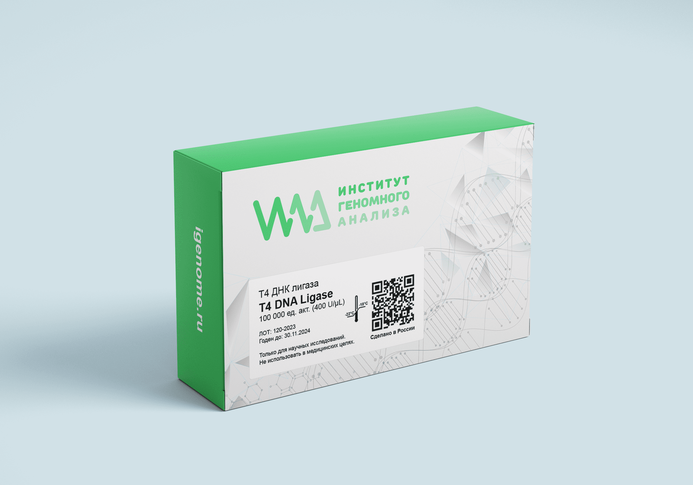
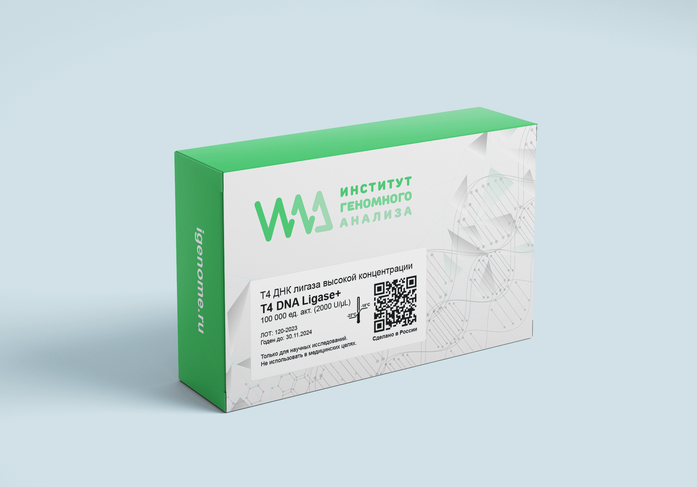
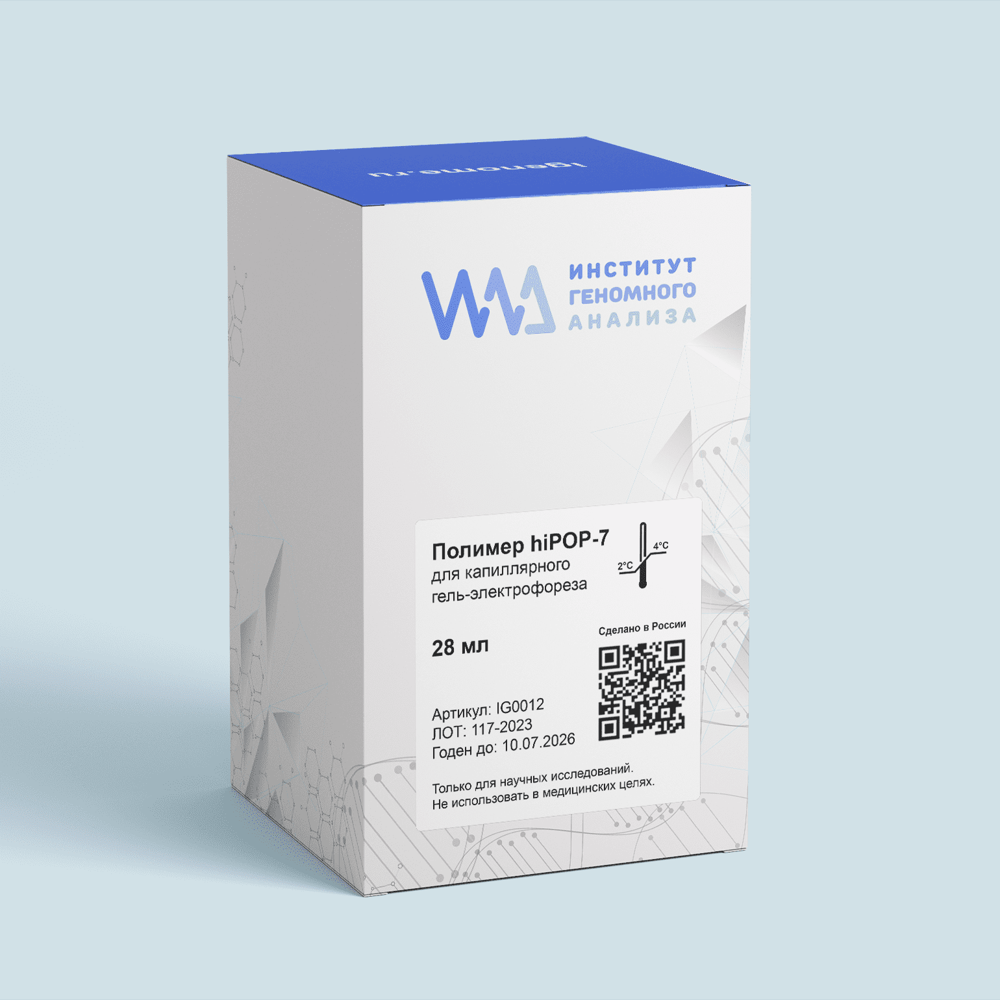
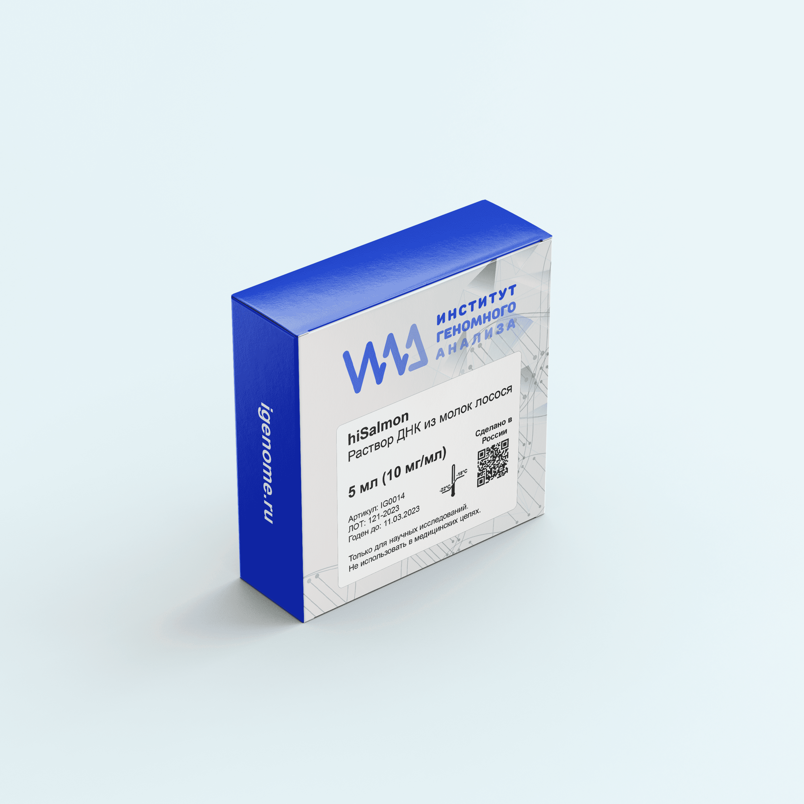

| Наименование товара | Характеристики | Срок поставки | Стоимость |
|---|---|---|---|
| Высокоточная рекомбинатная ДНК-полимераза hi-Fusion | Доступные приложения:
Скорость — высокая процессивность значительно сокращает время элонгации (15–30 сек/КБ) и общее время ПЦР-реакции. Успешная амплификация длинных продуктов с более высоким выходом — фрагменты размером до 37 т.п.н. амплифицируются за меньшее время и с меньшим количеством фермента (0,25–1 ед./реакция). |
14 дней | 100 ед. - 15000 руб. 500 ед. - 60000 руб. |
| ДНК-полимераза Pfu нативная hi-Pfu | Доступные приложения:
Высокая термостабильность — сохраняет активность на 95% после 2 часов инкубации при 95°C Эффективность амплификации — увеличение выхода ПЦР с использованием нативной ДНК-полимеразы Pfu |
14 дней | 100 ед. - 10000 руб. 500 ед. - 45000 руб. |
| Обратная транскриптаза hi-RT-Script | Доступные приложения:
Скорость — синтез полноразмерной кДНК за 10 минут. Синтез длинных продуктов с более высоким выходом — фрагменты размером до 12 т.п.н. Термостабильность — Оптимальная температура реакции — 50–55°С |
14 дней | 100 ед. - 10000 руб. 500 ед. - 45000 руб. |
| T4 ДНК-лигаза T4 DNA Ligase | Доступные приложения:
Скорость — лигирование липких концов завершается за 10 минут при комнатной температуре. |
14 дней | 100 ед. (Weiss unit) - 2000 руб. 500 ед. (Weiss unit) - 9000 руб. |
| T4 ДНК-лигаза для быстрого лигирования высокоактивная T4 DNA Fast Ligase | Доступные приложения:
Скорость — Быстрое лигирование липких или тупых концов ДНК всего за 5 минут. | 14 дней | 1000 ед. (Weiss unit) - 20000 руб. 5000 ед. (Weiss unit) - 90000 руб. |
| Полимер для проведения капиллярного гель-электрофореза hiPOP7 | Доступные приложения:
Увеличенный срок годности — полимер сохраняет свои свойства до 18 месяцев. | 14 дней | 28мл - 66000 руб. 10x28мл - 600000 руб. 30x28мл - по запросу |
| Раствор ДНК из молок лосося/Salmon Sperm DNA Solution hiSalmonDNA | Доступные приложения:
Увеличенный срок годности — используются для блокировки неспецифического прикрепления зонда к поверхности мембраны. | 14 дней | 5мл (15мг/мл) - 10000 руб. 25мл (15мг/мл) - 25000 руб. |